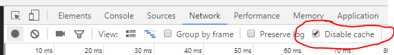
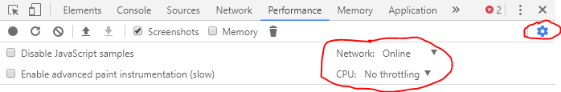
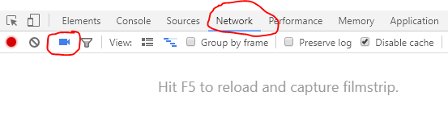
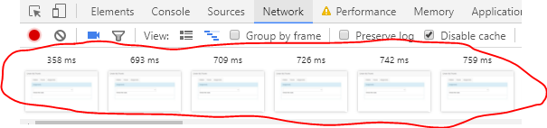
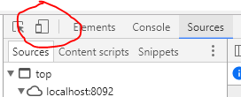
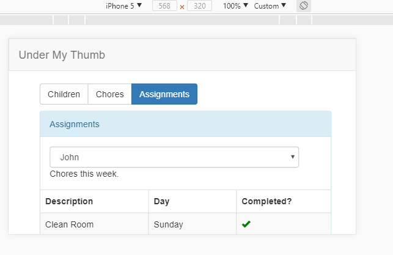

Improving Web Apps With Browser Developer Tools
- Debugging
- Prototyping
- Learning
- Improving
Open DevTools
- Ctrl+Shift+I in Chrome, Firefox
- F12 in Edge
Debugging
- Disable network cache
- console.* methods
- JS debugger - tracepoints
- DOM breakpoints
Disable network cache
- Ensure server will be called everytime
- Only disabled when dev tools are open
- Simulates new user visiting your site
- See how to disable in Chrome screenshot below

console.* methods
- Open console in DevTools, click each button below to see it show up in console.
- All methods demo'd are well supported across browsers
- console.log('Hello, log');
- console.info('Some info');
- console.warn('Are you sure?');
- console.error('Oh, no!');
console.* methods (cont)
- Nice tabular display, can click on column to sort
- console.table(person); //object
- console.table(requestDurations); //array
- console.table(cityTemps); //array of objects
console.* methods (cont)
- Measure performance or duration
- console.time("custom-timer-name");
- console.timeEnd("custom-timer-name");
console.* methods (cont)
- Print current stack trace when called, e.g. how did we get here?
- console.trace();
DOM breakpoints
- You should now see the temperature control in upper-right. It appears when you view this slide.
- Click "Hide" to hide it. Leave and come back to slide for it to appear again.
- Enter 15 as a temperature, notice the text changes color
- Go to next slide.
DOM breakpoints (cont)
- Right-click on Temperature label, inspect element
- In elements tab, right-click to add DOM breakpoint, select "Attribute modification"
- Enter different temps, maybe 100? You should now be dropped into line of JS that caused color to change
- You can view all DOM breakpoints on Sources and delete from there, delete now
JS debugger
- Open test-script.js, use Ctrl+P and type test-script.js, put breakpoint in updateCurrentTemp, line 67
- Call stack works, hovering over variables works, features provided in all browsers
JS debugger
- Or, type following into console: debug(presentation.updateCurrentTemp)
- debug is Chrome specific, will now stop debugger when function is called
- Use undebug(presentation.updateCurrentTemp) to stop debugging
Tracepoint
- Add breakpoint to line 69, right-click "Edit breakpoint..."
- Put "console.table(cityTemps);" into condition
- No need to add code, reload page
- No risk of checking logging code into source control
Conditional breakpoint
- Add breakpoint to line 69, right-click "Edit breakpoint..."
- Put "newTemp < 0" into condition
- Only when you enter temp below 0 does breakpoint stop
Modifying state in breakpoint
- Add new breakpoint to line 70, right-click "Edit breakpoint..."
- Put "(currentCity.High = 2) && false" into condition
- This allows us to easily test the logic that updates currentCity.High without manually updating currentCity.High manually every time.
- Very useful for simulating error conditions, no auth, failed server without checking that code into source control.
Prototyping
- Live edit HTML/CSS in Elements tab
- Iterate quickly, find the good ideas faster
- I've had success in team and customer settings
- Changes are NOT persisted, you must do that yourself.
Live edit HTML/CSS
- Right-click on slide title, inspect element.
- Double-click to edit element, type a new title, press Enter
- Go over to css and add a new rule: transform: rotate(20deg);
- Select the 20deg text, use up and down arrow and Chrome will increment, decrement number by 1 while key is held
Learning
- Use latest JS in the console
- Live edit CSS
- Do both of the above on a site you didn't write
Learn new JS features
- Try this in the console
- presentation.cityTemps.map(x => (x.High - 32) / 1.8)
- Or this: presentation.cityTemps.find(x => x.High > 65 && x.High < 70)
- Both of those lines use multiple ES2015 features
- Or this ES2017 feature: 5 ** 2
Improving
- Mimic end-users experience
- Profile and optimize
Mimic end-users experience
-
No one is using your machine to access your site
- Slower CPU, slower network, additional network latency
- Throttle CPU and Bandwidth in developer tools
Mimic end-users experience
- Try on your site, our use mine if you have Docker installed
- docker run -p 8089:80 kstreith/chore-app
- Open browser to http://localhost:8089/
Throttle CPU and Bandwidth
- Currently only Chrome supports

Mimic end-users experience, cont.
- Use network filmstrip to visualize the loading experience on slower systems
- Currently only Chrome supports


Mimic end-users experience, cont.
- Use Responsive Tools to simulate other screen sizes


Profile and Optimize
- Use Profiler
- Enable FPS meter
- Enable layer drawing
- Use performance.mark and performance.measure with Profiler
Recap
- Debug
- Prototype
- Learn
- Improve User Experience